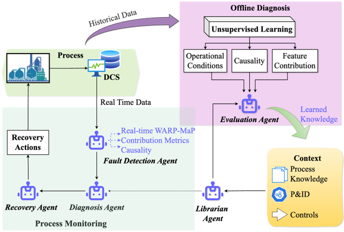
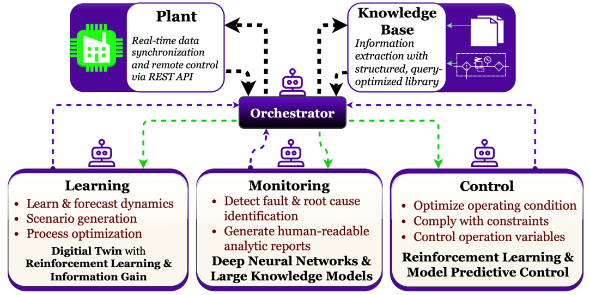
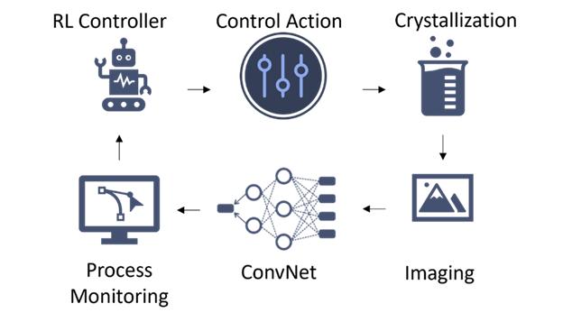

Research Area
Intelligent Systems & Automation
Advancing intelligent automation by integrating data-driven learning, real-time monitoring, and control strategies to enable autonomous, adaptive, and optimized industrial operations.

Intelligent Monitoring & Diagnosis
Agent-Based Process Monitoring & Knowledge Integration
Modern industrial processes generate large volumes of real-time and historical data that must be interpreted to detect faults and maintain reliable operation. Intelligent monitoring frameworks leverage both offline learning and online data streams to extract operational knowledge, identify abnormal behavior, and diagnose root causes. By integrating unsupervised learning with process context, these systems enable a deeper understanding of process dynamics beyond traditional rule-based monitoring.
Agent-based architectures provide a modular approach to process supervision, where specialized agents perform tasks such as fault detection, diagnosis, recovery, and knowledge management. Real-time data from plant systems (e.g., DCS) is continuously evaluated using learned models, while contextual information—such as process knowledge, P&IDs, and control logic—is incorporated to support decision-making. This framework enables adaptive monitoring, interpretable diagnostics, and coordinated response strategies for complex industrial environments.

Autonomous Systems
Multi-Agentic Frameworks
Next-generation automation systems integrate learning, monitoring, and control within a unified architecture to enable intelligent and autonomous operation. Through real-time data synchronization and interaction with plant systems, these frameworks support continuous analysis of process behavior while leveraging structured knowledge bases for efficient information retrieval and reasoning.
An orchestration layer coordinates multiple intelligent modules, including learning systems for forecasting and optimization, monitoring systems for fault detection and reporting, and control systems for enforcing optimal and constraint-aware operation. By combining reinforcement learning, model predictive control, and data-driven analytics, these architectures enable closed-loop decision-making that adapts to changing process conditions while maintaining safety, efficiency, and performance.

Agent-based Control and Optimization
Deep Reinforced Learning (DRL)
For Optimal Control. Ex. control polymerization reactor
For Process Optimiation. Ex. Optimization of bio-reactor
For Basic Controller Tuning. Ex. Autotuning of PID controller